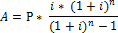

Private instance variables:Constructor
- double amountBorrowed -- the principal amount of the loan.
- double yearlyRate -- the annual interest rate of the loan. A rate of 7.25% for example must be stored as 7.25.
- int years -- the number of years on the loan.
Public instance methods
- public MyLoan( ) -- Initializes all instance variables to 0
- public MyLoan( double amt, double rt, int yrs) -- Initialize the instance variables using the parameters.
- public double getAmountBorrowed()
- public double getYearlyRate()
- public int getYears()
- public double monthlyPayment() -- This method should return the monthly payment. Use the following formula to compute this amount.

where A is the amount of monthly payment, P is the amount borrowed, i is the monthly rate (= (yearlyRate / 100) / 12) and n is the number of payments (= years * 12). For example a person borrowing $100000 at a rate of 6.25% for 30 years should have a monthly payment which is around $615.)- public double totalPayment() -- This method should return the total amount paid to the bank (= the monthly payment * the number of payments).
- public String toString() -- This method will return as a String the instance variables in the following form (including the $ symbol/char and exactly two decimal digits). Using the above example:
Loan: $100,000.00 at 6.25% for 30 yearsTo obtain a String with two decimal digits (similar to how we did using printf)… the way is to use a static method defined in Java String class called “format” (http://docs.oracle.com/javase/7/docs/api/java/lang/String.html) and pass in a format string “%.2f” and the (instance) variable which you want to be printed (in a string) with two decimal digits. So for example,
String temp1 = String.format(“$%.2f”, amountBorrowed); // temp1 is "$2.48" if amountBorrrowed is 2.48
Then you can concatenate several strings or other values to make one long string by using a + operator. For example,
String sj = "Java"; int val = 7; String ret = "This is " + sj + " " + val; // "This is Java 7"
Client Program as a Unit Test (in main())
Write code in main() which does the following. It's mean to be an client/application program, but placed in main() for now to simplify the scheme, just for the purpose of mechanics.
This application simulates a Loan specialist. The specialist has two pre-set interest rates: one for 15 years and another for 30 years. They should be declared as constants RATE15 (= 5.75) and RATE30 (= 6.25) in the application. The application/specialist asks the user/customer for the principal amount to borrow, and displays the monthly payment and the total payment for both 15 and 30 years (i.e., what-if scenarios).
Below is the sample output of a session. The part where the user entered is indicated in bold.
***** Welcome to the Loan analyzer! ***** Enter the principle amount to borrow: 100000 ============ ANALYSES ============ Loan: $100000.0 at 5.75% for 15 years Monthly payment = $830.41 Total payment = $149473.82 Loan: $100000.0 at 6.25% for 30 years Monthly payment = $615.72 Total payment = $221658.19 ================================== ** Do you want to continue (y/n)? y Enter the principle amount to borrow: 150000 ============ ANALYSES ============ Loan: $150000.0 at 5.75% for 15 years Monthly payment = $1245.62 Total payment = $224210.72 Loan: $150000.0 at 6.25% for 30 years Monthly payment = $923.58 Total payment = $332487.29 ================================== ** Do you want to continue (y/n)? n ********** Thank you. Come again! **********- REQUIREMENTS:
- Create two MyLoan objects -- one for the 15 year loan, and another for the 30 year loan, in every session.
- Print the first line of the analysis for each Loan by calling the toString() method.
- The monthly and total payments must be obtained by calling the monthlyPayment() and totalPayment() methods respectively (and in no other way). And those values must be printed with two decimal digits (and followed by a $).
- Repeat the session as long as the user wants.
Receive input from the keyboard, and display the output to the terminal Also you can assume the user will enter valid values at the prompts.
Submit "MyLoan.java"in the HW#2 dropbox on D2L.